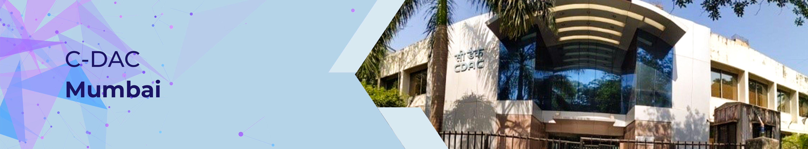

Our Vision & Value
To emerge as the premier R&D institution for the design, development and deployment of world class electronic and IT solutions for economic and human advancement.
Our Mission
Our Mission C-DAC's Mission statement has evolved after deep thought and in consultation with the members of C-DAC. The Mission Statement as defined below, reflects the fabric and character of C-DAC and integrates in the fulfillment of C-DAC's Vision.
- Expand the frontiers of Electronics and Information Technology.
- Evolve technology solutions - architectures, systems and standards for nationally important problems.
- Achieve rapid and effective spread of knowledge by overcoming language barriers through application of technologies.
- Share experience and know-how to help build advanced competence in the areas of Electronics and Information Technology.
- Bring benefits of Electronics and Information Technology to society.
- Utilize the Intellectual Property generated by converting it to business opportunity
Our Core Value
The essence of C-DAC's philosophy and the bed rock of our Corporate Culture...
- Innovation and pursuit of excellence in 'Applications', 'Research' and 'Technology' (ART).
- Integrity, transparency and openness in all our actions.
- Working with and through the 'Teams' is our way of life.
- Distributed Leadership across the organization at various levels.
- Strive to continuously improve our processes and quality.
- Address the needs of the society through user centric initiatives.